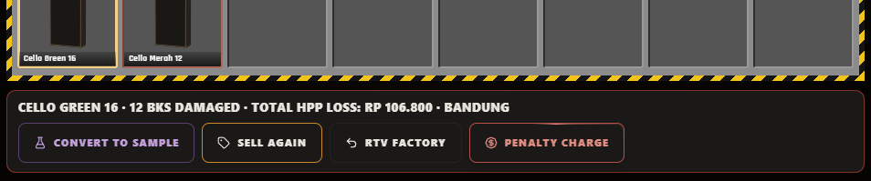
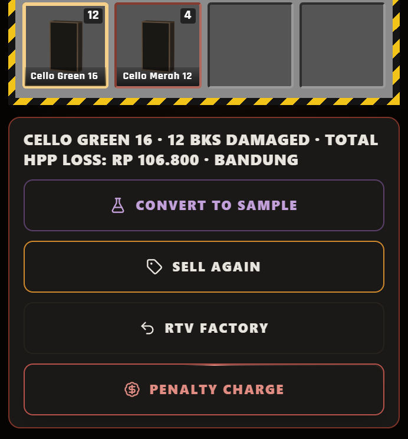
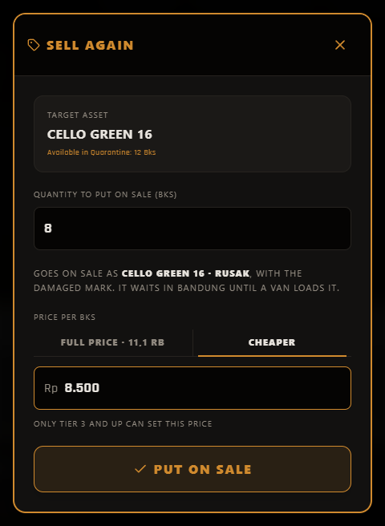
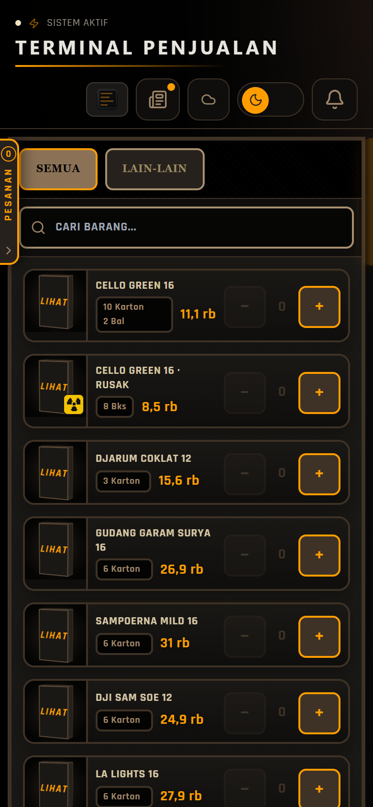
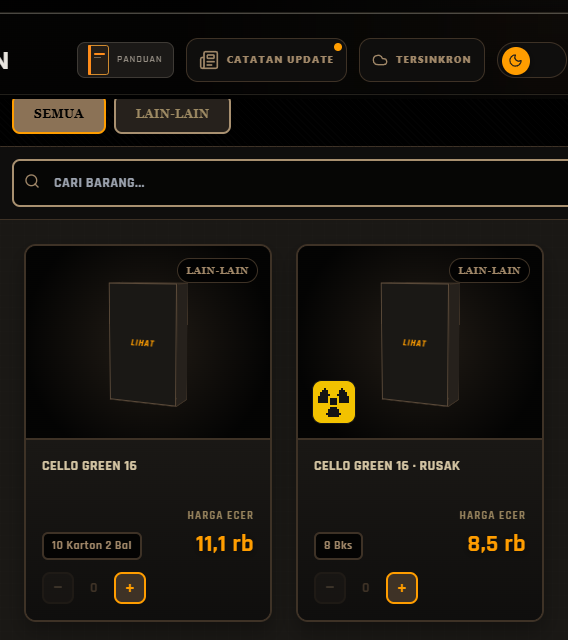
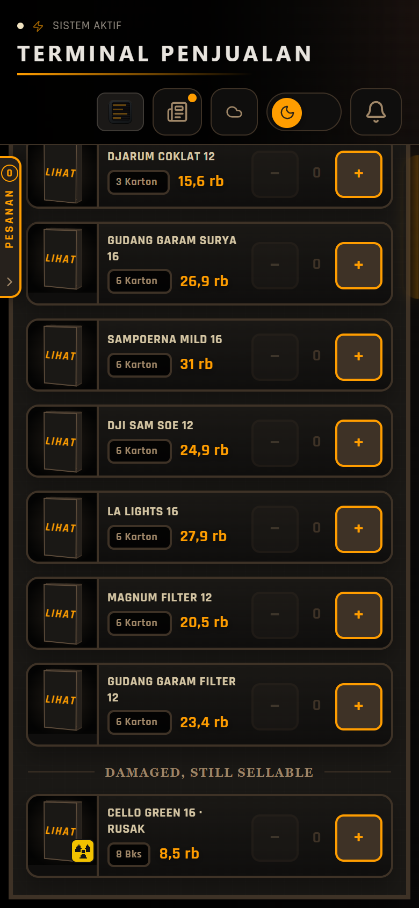
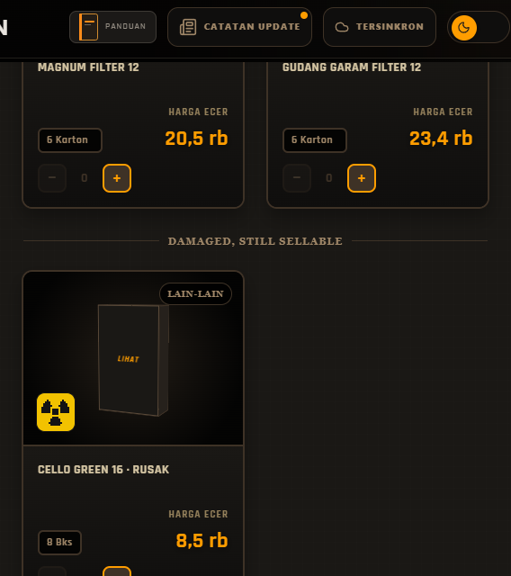

Stock Opname > Quarantine > a warehouse > a damaged product. Same box as the buttons next to it, with a gold edge.


Only Tier 3 and up can set the price: a new key in the Access Matrix. The packs keep the damaged mark and wait in that warehouse until a van loads them, like any pack.




